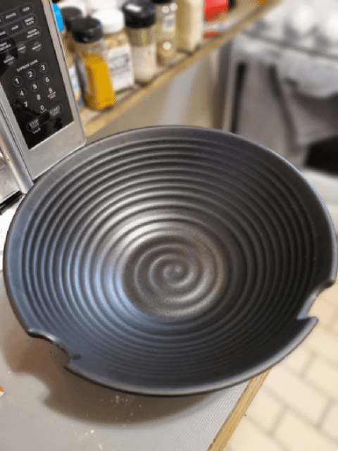

Garlic Chicken Fried Chicken

Description
Lentils, rice and pasta are cooked and then served in a spicy tomato sauce.
This is a typical Egyptian dish that is very good
and cheap over here! Puree the sauce
in a food processor if you like a smoother texture."
ingredients
- 3/4 cup brown lentils
- 4 cups water
- 3/4 cup uncooked long grain rice
- 1 cup elbow macaroni
- 2 tablespoons vegetable oil
- 2 large onions, chopped
- 14 cloves garlic, minced
- 1 (15.5 ounce) can diced tomatoes
- 1/4 teaspoon red pepper flakes, or to taste
- salt and pepper to taste
Steps
- Step 1:
Combine the lentils and water in a large saucepan.Bring to a boil,
then simmer over medium heat for 25 minutes.
Add the rice to the lentils, and continue to simmer for an additional 20 minutes,
or until rice is tender.
- Step 2:
Fill a separate saucepan with lightly salted water
and bring to a boil.
Add the macaroni and cook until tender,
about 8 minutes. Drain.
- Step 3:
Meanwhile, heat the vegetable oil in a large skillet over medium heat.
Add onion and garlic; cook and stir until onion is lightly browned.
Pour in the tomatoes and season with red pepper flakes,salt and pepper.
Simmer over medium heat for 10 to 20 minutes.
- Step 4:
In a large serving dish, stir together the lentils,
rice and macaroni.
Mix in the tomato sauce until evenly coated.
Home